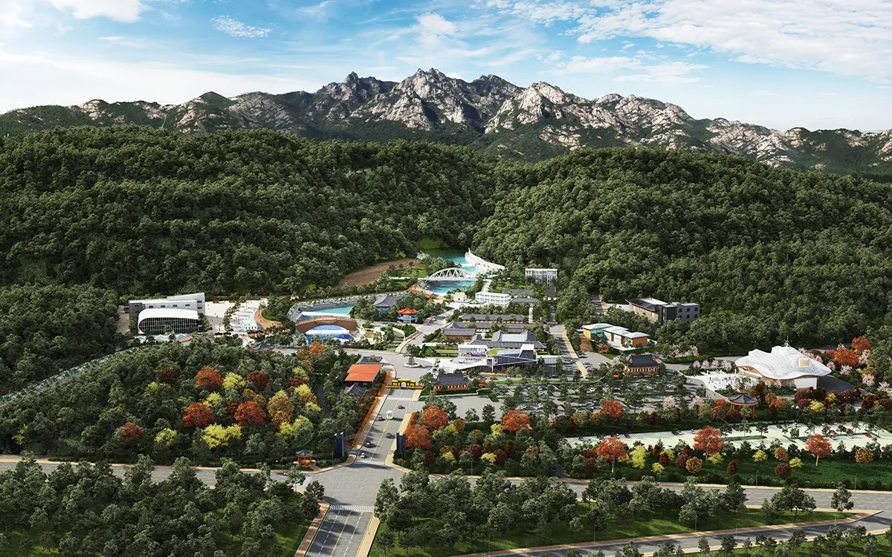
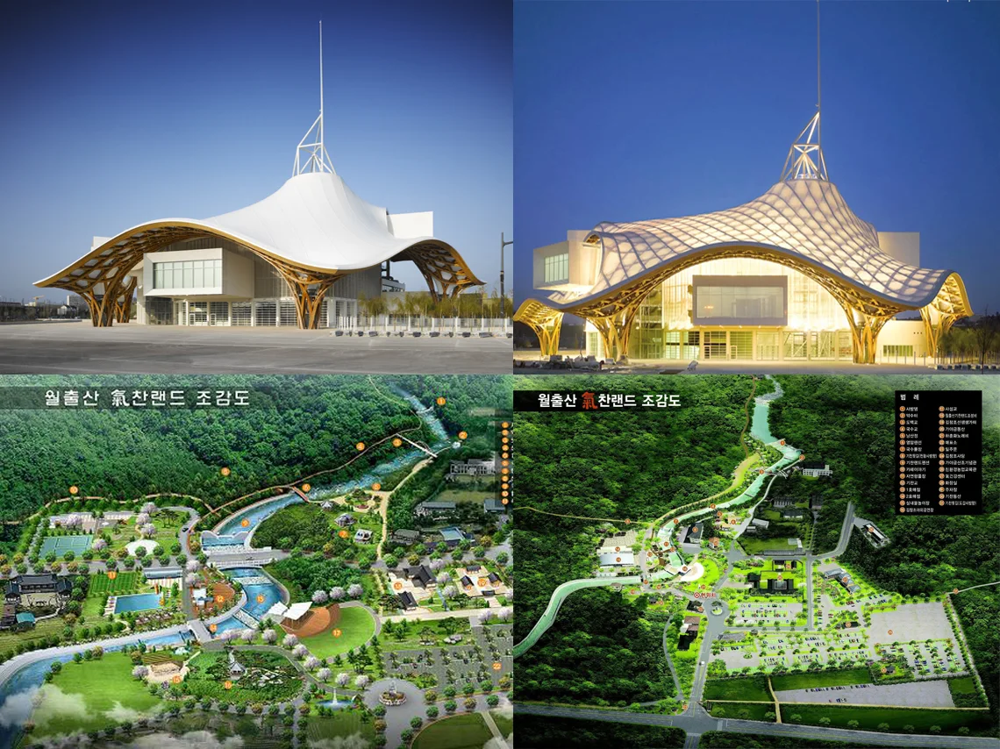
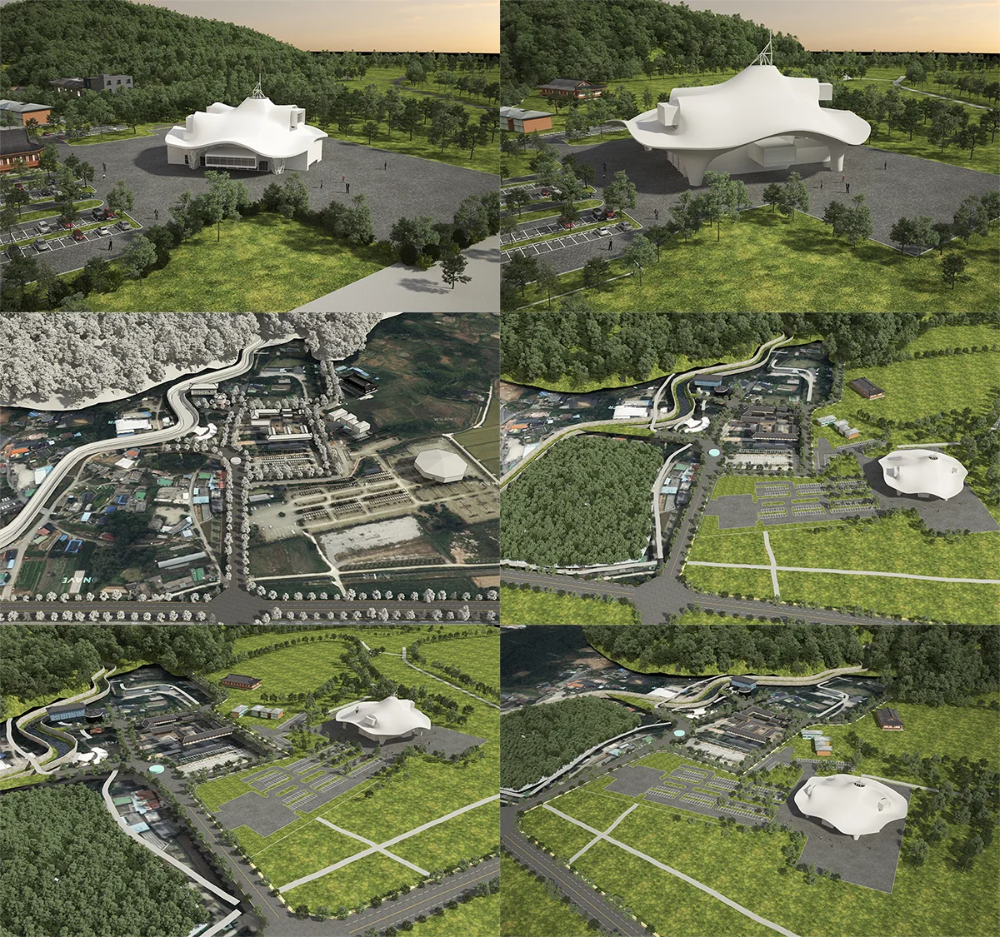
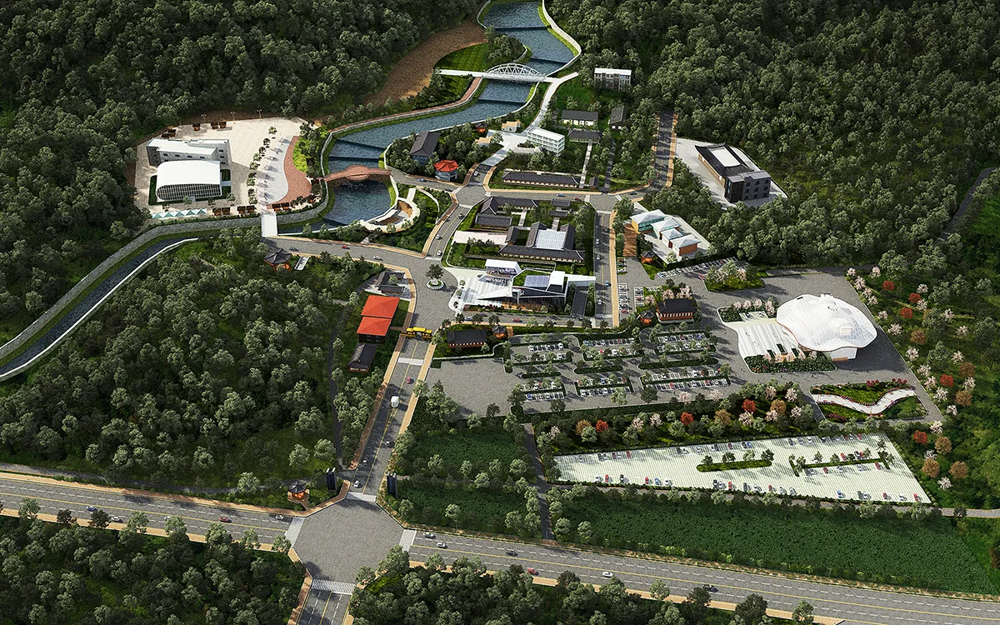
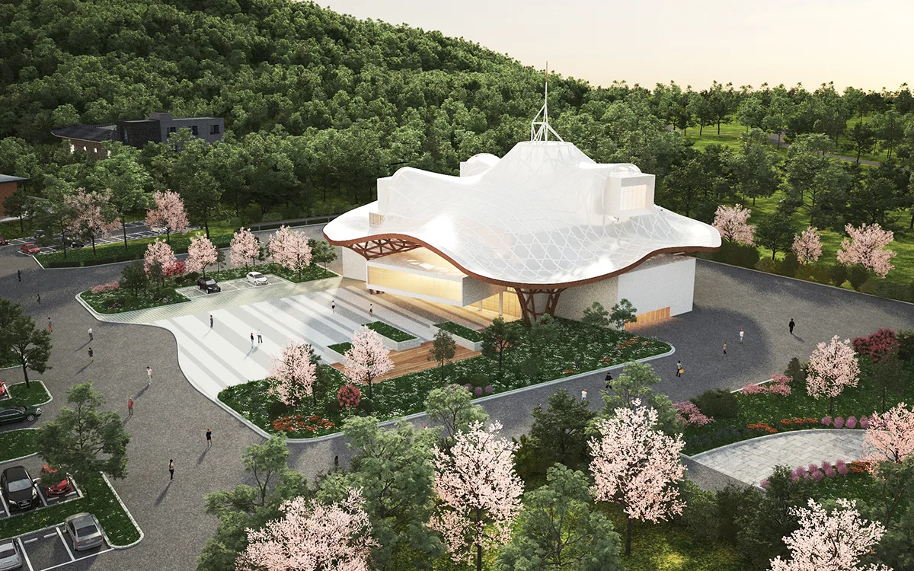
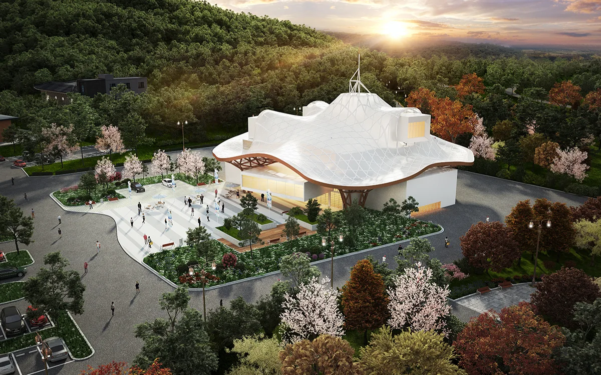

프로젝트 소개
2018년 12월 26일에 문의주셨던 전라남도 영암군 기찬랜드로 19-3 일대 기찬랜드 개발기획서에 사용될 조감도 및 투시도입니다.



이번 프로젝트의 경우, 기존 기찬랜드의 잔여부지 개발사업 보고서에 필요한 조감도 제작을 요청하셨습니다. 원래있던 조감도 이미지와 추가로 신설되는 건축물 도면 및 레퍼런스 이미지를 보내주셨습니다.
이전의 조감도에서 신축 건물을 추가하여 업그레이드된 퀄리티를 원하셨습니다.

작업과정
뷰선정단계

뷰 선정시 주변환경과 잘 어우러지는 방향 또는 해당 건축물이 돋보일수있는 방향으로 정합니다.
따로 원하시는 뷰 방향이 있으시면 미리 말씀해주시거나 저희와 상의 후 진행하셔도 됩니다.
1차 완성 단계


뷰 선정 후 본격적으로 모델링이 시작되며, 이때 필수로 들어가거나 표시해야될 부분을 말씀해주시면 됩니다. 1차 완성본을 통해 고객님과의 피드백을 통해 수정 및 보완하는 과정을 거칩니다.
※ 해당 이미지는 완성본이 아닙니다! 간혹 완성본이라고 착각하시는 분들이 많이 계십니다.
이 단계에서 더 꾸며주는 작업을 진행하므로 걱정하지 않으셔도 됩니다.
최종 완성 단계
